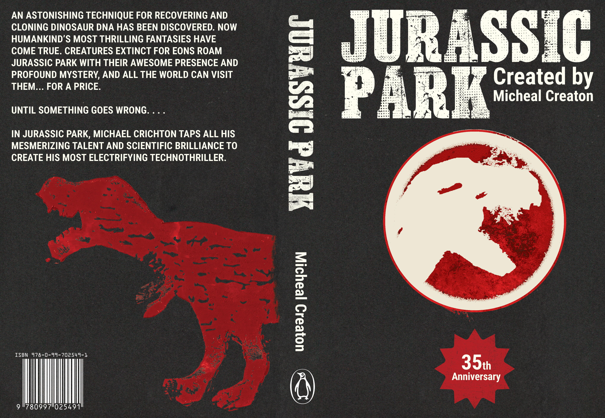
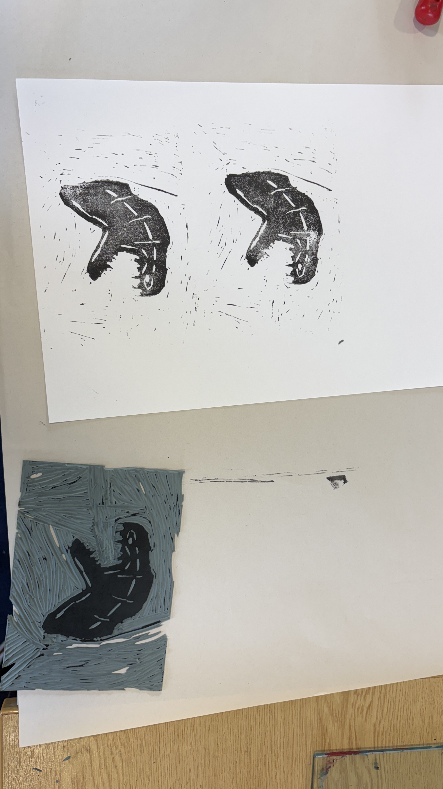
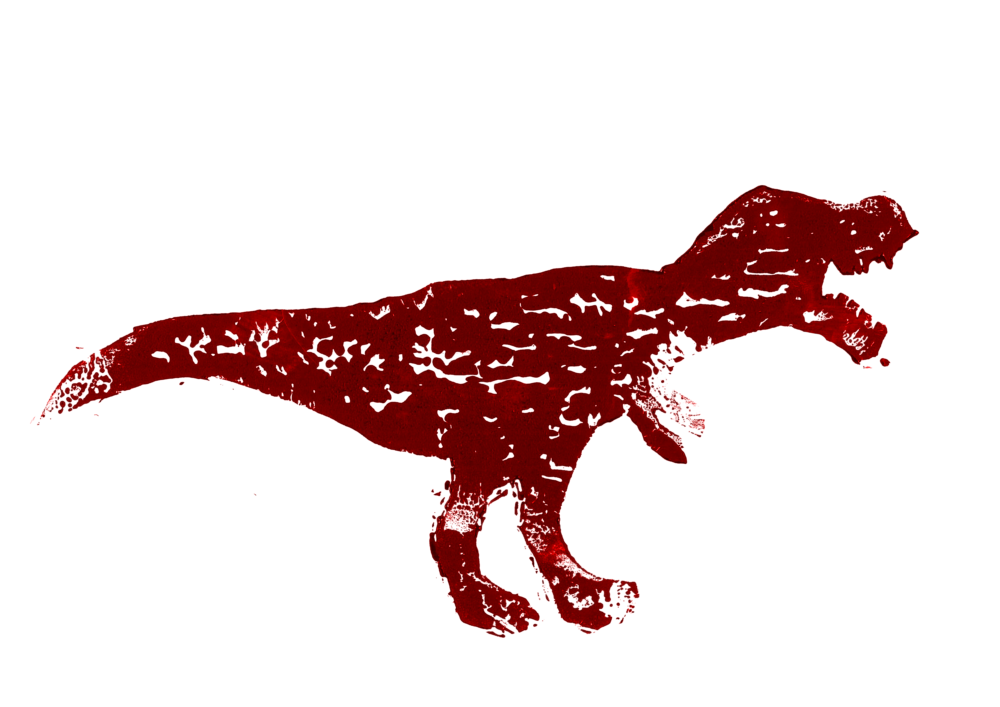

Jurassic Park - Book Cover
This was the first project I completed for A1 Skills on my college course. In which I had to create a book cover that used a heavy mix of traditional and digital methods.

- PurposeA1 Skills
- RoleDesigner
- Year2025
- ToolsPhotoshop, Illustrator, Lino Printing
This was my first project I had to complete in A1 Skills, during this project I was tasked with incorpirating tranditional methods with digital methods.
When starting this book cover I started by researching different books in which I settled on Jurassic Park in which I looked at the different versions and history of the Jurassic Park books. Once I had completed my research I looked at different types of tradional methods I could use in which I settled on lino printing.
Once settled on lino printing I decided to cut out a dinosuar head with lots of detail around, and then I also completed a whole dinosaur which allowed me to experiment with different compositions.
To create the final outcome I combinded both to create a detailed front and back cover. The layout of the book was also very compact when needed but also allowed for lots of space and artwork to go in its place.


